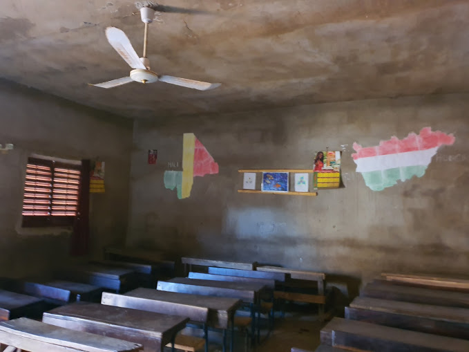

Make Way for the Ball!
Let us build a sports ground and take the school out of the marsh!
There is a shantytown in Africa where people know Hungarians very well.

A school on the marshland
This is the Sanfil slum in Bamako, Mali, which has many national flags of Hungary hovering in the wind, so if a compatriot visits the place, he will feel at home. It is not a coincidence either that the bare walls of the classrooms of the local school are decorated with children’s paintings from the Hungarian Igazgyongy Charitable Foundation and a chalk-drawn map of Hungary.
A classroom
This school has developed with the financial support of Hungarian families in the past six years. We have successfully built classrooms, restrooms, computer rooms there, we have planted trees, we have done some teaching and sports, and have drawn pictures together with the African children. The participants of the Budapest-Bamako rally raid have taken school desks there several times, for example.
The Bamako Child Support Programme
In this area, there are no public schools at all. In Bamako, only those can attend school who can afford the payment of the modest tuition fees, or who are supported by the Bamako child sponsorship program. There are more than one hundred pupils who can go to school at the moment, thanks to the donations of the Hungarian families.
Preparatory Class
In need of a field
The school was built on the edge of the slum, literally on the marshland full of trash. We can reach our destination through the landfill or by crossing the planks, trying to keep our balance. Last year, the school began to improve the environment by filling up the marsh but unfortunately, they ran out of money. By filling up the dirty and putrid marsh, their idea was to create a field for the kids, where they could play sports in a much healthier and more malaria-free environment.
By bringing life to this project, it is not just the successful football team of the village that would be very happy. The situation is that as a result of the building in of this area, they have been pushed out of their previous training spot.
The team in Hungarian shirts
The school could continue the building of the brand new field here, for which they would still need sand and rubble of the amount equivalent to 50 dumper trucks.
Let us help them build a sports field. Let us create a healthier environment for them.
Support us so we can support them!
Let us organize this year’s traditional football match between Hungary and Mali on the sports field of the school!
The account number of our foundation is as follows:
Magnet Bank 16200010 – 10097432 Közel Afrikához Alapítvány (Close to Africa Foundation)
In the comment section, please indicate “Sportpálya” (“Sports Field”) or “Utat a labdának!” (“Make Way for the Ball!”).
The Close to Africa Foundation and the Chérifoula School